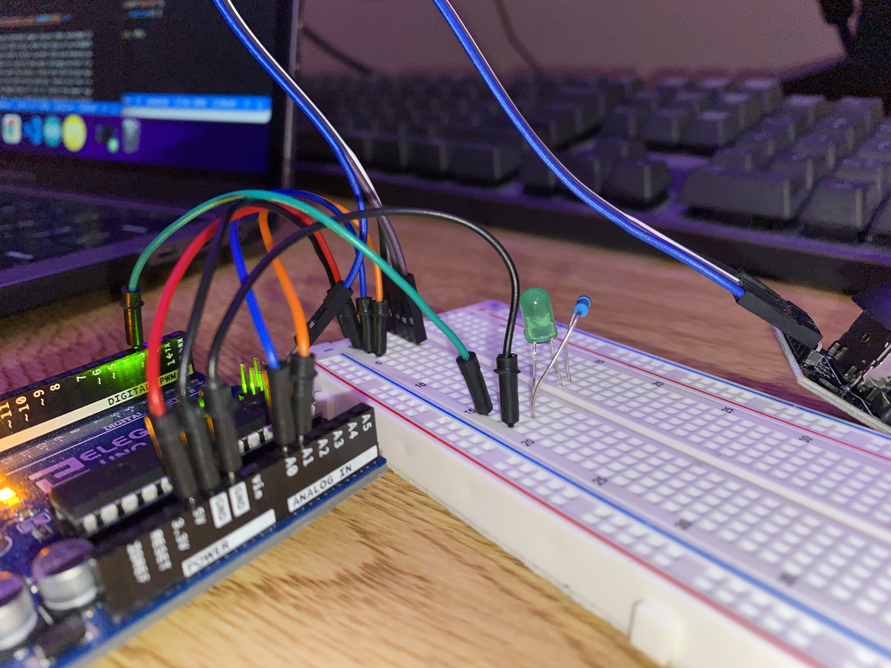
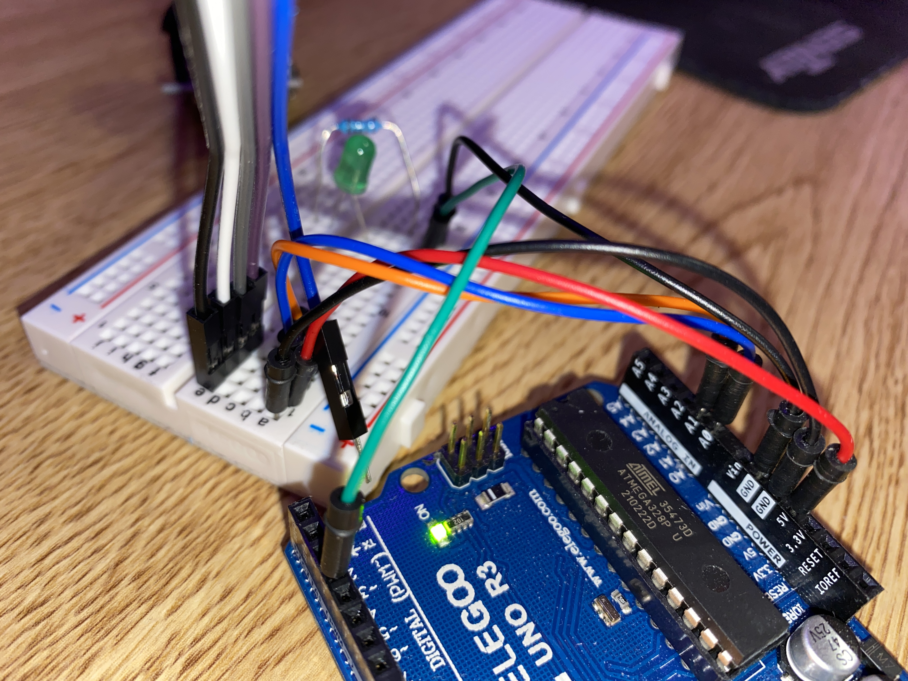
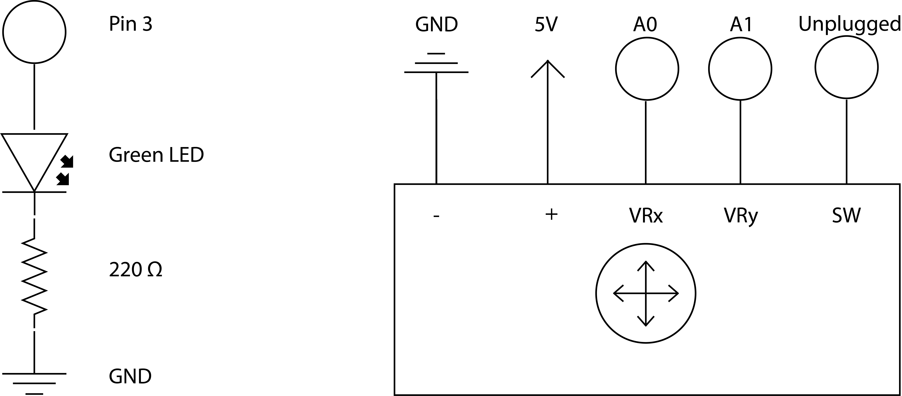
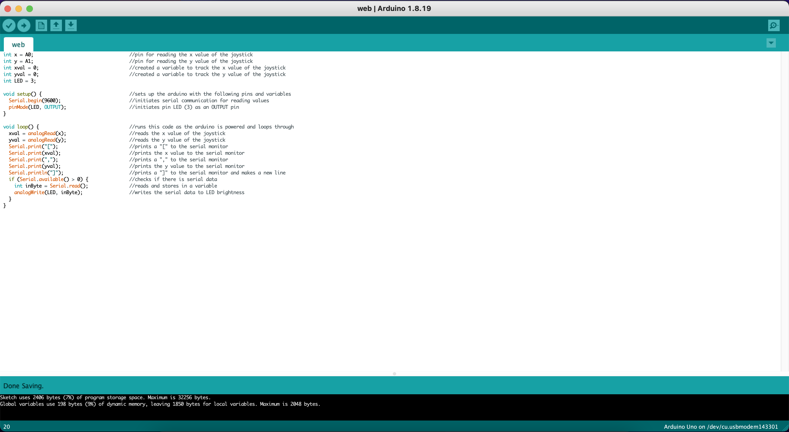

Here is an image of my circuit.

Here is another image of my circuit.

Here is ANOTHER image of my circuit.

Here is a gif of my circuit working. The circle on the screen will move based on input received from the joystick.

Here is a another gif of my circuit working. The LED's brightness will fade if the button has been toggled/pressed. When toggled on, the brightness of the LED will increase until it reaches its max brightness, then resets. Toggling will stop the LED at whatever brightness it is at.

The green LED has a voltage drop of 1.8 v. I had to choose resistors that provided the recommended 20 a. For the green LED's resistor, I needed a (5 - 1.8) / .02 = 160 ohm resistor. The closest resistor I had to this was 220 ohm (I went over to make sure I didn't short the LED). The Arduino Uno has ADC resolution of 10 bits. Hence the values on each analog channel can vary from 0 to 1023 and the home position for the joystick is x: 511, y: 511. The joystick is powered by 5V given through the arduino's pin.

Here is my code with comments explaining how it works. I read the values of the joystick and write them to the serial monitor in the form of an array in each line. The code checks to see if there is any communication from serial and if there is, it will adjust the LED's brightness to be whatever data is read from serial.
Arduino
int x = A0; //pin for reading the x value of the joystick
int y = A1; //pin for reading the y value of the joystick
int xval = 0; //created a variable to track the x value of the joystick
int yval = 0; //created a variable to track the y value of the joystick
int LED = 3;
void setup() { //sets up the arduino with the following pins and variables
Serial.begin(9600); //initiates serial communication for reading values
pinMode(LED, OUTPUT); //initiates pin LED (3) as an OUTPUT pin
}
void loop() { //runs this code as the arduino is powered and loops through
xval = analogRead(x); //reads the x value of the joystick
yval = analogRead(y); //reads the y value of the joystick
Serial.print("["); //prints a "[" to the serial monitor
Serial.print(xval); //prints the x value to the serial monitor
Serial.print(","); //prints a "," to the serial monitor
Serial.print(yval); //prints the y value to the serial monitor
Serial.println("]"); //prints a "]" to the serial monitor and makes a new line
if (Serial.available() > 0) { //checks if there is serial data
int inByte = Serial.read(); //reads and stores in a variable
analogWrite(LED, inByte); //writes the serial data to LED brightness
}
}
JavaScript (P5)
var serial; //variable to hold an instance of the serialport library
var portName = '/dev/tty.usbmodem143301' //the name of my port
var dataarray = []; //data from serial stored in array
let timerId = null; //used to check if a timer started
let remainingSeconds = 0; //tracks amount of time the timer has been going
function setup() { //function called during page setup
serial = new p5.SerialPort(); //new instance of the serialport library
serial.on('list', printList); //set a callback function for the serialport list event
serial.on('connected', serverConnected); //callback for connecting to the server
serial.on('open', portOpen); //callback for the port opening
serial.on('data', serialEvent); //callback for when new data arrives
serial.on('error', serialError); //callback for errors
serial.on('close', portClose); //callback for the port closing
serial.list(); //list the serial ports
serial.open(portName); //open a serial port
createCanvas(1500, 1000); //creates a canvas to draw on
background(0); //sets the background color to black
}
(function() { //anonymous function for callback
window.addEventListener('load', init); //checks for when page has loaded to "init"
function init() { //function called when page loaded
let button = document.querySelector("button"); //finds the first button on the html page
button.addEventListener("click", function() { //adds functionality to button when clicked
if (timerId === null) { //if the timer has not been turned on
timerId = setInterval(advance, 10); //create a timer and "advances"
} else { //when the timer has been turned on
clearInterval(timerId); //turns off the timer
timerId = null; //resets the value used to check the timer's state
}
});
}
})();
function advance() { //function called every 10 ms when timer is on
remainingSeconds++; //increments the remainingSeconds
if (remainingSeconds > 255) { //if remainingSeconds is over 255
remainingSeconds = 0; //reset remainingSeconds to 0
}
}
function printList(portList) { //function called during setup to see ports
for (var i = 0; i < portList.length; i++) { //for the portList length, which is an array of serial ports
print(i + " " + portList[i]); //prints list to console
}
}
function serverConnected() { //function called when server is connected
print('Connected to server.'); //prints appropriate message
}
function portOpen() { //function called when port is open
print('The serial port opened.') //prints appropriate message
}
function serialError(err) { //function called when there is an error with serial
print('Something went wrong with the serial port. ' + err); //prints appropriate message
}
function portClose() { //function called when port is closed
print('The serial port closed.'); //prints appropriate message
}
function serialEvent() { //function called when something happens through serial
if (serial.available()) { //if the serial is working
var datastring = serial.readLine(); //stores the information from serial
var newarray; //creates a temporary array
try { //trys the block of code
newarray = JSON.parse(datastring); //stores the information from serial into the temporary array
} catch(err) { //if an error occurs in the block
console.log(err); //prints the error
}
if (typeof(newarray) == 'object') { //if the temporary array/ information from serial is an array
dataarray = newarray; //makes our global array the temporary array
}
}
}
function draw() { //function called to draw on page
serial.write(remainingSeconds); //sends remainingSeconds to the serial port for arduino
clear(); //clears the page
noStroke(); //removes stroke from anything below
fill("#a742f5"); //fills anything below with a purple color
ellipse(dataarray[0] * 1.3 + 50, dataarray[1] / 1.8 + 50, 50, 50); //draws a small ellipse with position based on global array's values
}
This code connects the serial port to an html webpage that uses p5.js. The code will log the status of the port during setup to the console. I added a button with an event listener and timer to toggle if I want my LED lit up or not. I send this data over through the serial port to arduino. The code will finally draw on the page a circle that moves around based on input received from the arduino by parsing what the arduino serial sends, which should look like an array every line. I multiply and divide the values of the array when changing the ellipse's position from joystick input since the joystick inputs values from 0 - 1023 and I needed the ellipse to fit on the page. remainingSeconds is limited from 0 - 255 because analogWrite() on the arduino can only work with values from 0 - 255
HTML
<!DOCTYPE html> declares the document as HTML
<html lang=""> sets the language of the html
<head>
<meta charset="utf-8"> sets utf-8 encoding
<meta name="viewport" content="width=device-width, initial-scale=1.0"> sets meta information
<title>Joystick and Button</title> sets the name of the page
<style> body {padding: 0; margin: 0;} </style> styles the page
<script src="../p5.min.js"></script> runs the min.js script
<script src="../addons/p5.dom.min.js"></script> runs the dom.min.js script
<script src="../addons/p5.sound.min.js"></script> runs the sound.min.js script
<script src="../addons/p5.serialport.js"></script> runs the serialport.js script
<script src="sketch.js"></script> runs the sketch.js script
<div style="text-align:center;"> aligns a div to the center
<button>Toggle LED</button> creates a button with text "Toggle LED"
</div>
</head>
<body>
</body>
</html>
This code is setup for an empty html page that runs many javascript scripts to support serial connection and p5